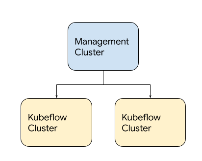
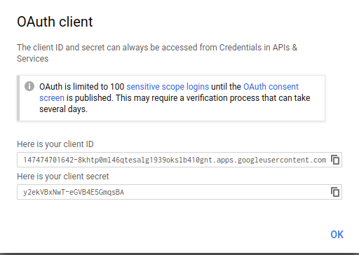
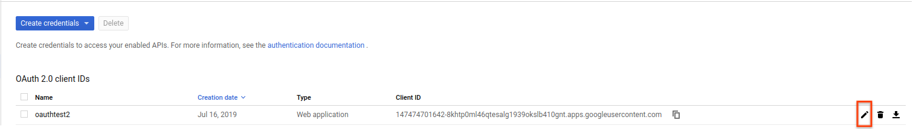

This is the multi-page printable view of this section. Click here to print.
Deployment
- 1: Overview
- 2: Setting up GCP Project
- 3: Setting up OAuth client
- 4: Deploying Management cluster
- 5: Deploying Kubeflow cluster
- 6: Upgrade Kubeflow
- 7: Monitoring Cloud IAP Setup
- 8: Deleting Kubeflow
1 - Overview
This guide describes how to deploy Kubeflow and a series of Kubeflow components on Google Kubernetes Engine (GKE).
Features
Kubeflow deployed on Google Cloud includes the following:
- Full-fledged multi-user Kubeflow running on Google Kubernetes Engine.
- Cluster Autoscaler with automatic resizing of the node pool.
- Cloud Endpoint integrated with Identity-aware Proxy (IAP).
- GPU and Cloud TPU accelerated nodes available for your Machine Learning (ML) workloads.
- Cloud Logging for easy debugging and troubleshooting.
- Other managed services offered by Google Cloud, such as Cloud Storage, Cloud SQL, Anthos Service Mesh, Identity and Access Management (IAM), Config Controller, and so on.
Figure 1. User interface of full-fledged Kubeflow deployment on Google Cloud.
Management cluster
Kubeflow on Google Cloud employs a management cluster, which lets you manage Google Cloud resources via Config Controller. The management cluster is independent from the Kubeflow cluster and manages Kubeflow clusters. You can also use a management cluster from a different Google Cloud project, by assigning owner permissions to the associated service account.

Figure 2. Example of Kubeflow on Google Cloud deployment.
Deployment process
To set up a Kubeflow environment on Google Cloud, complete these steps:
- Set up Google Cloud project.
- Set up OAuth client.
- Deploy Management cluster.
- Deploy Kubeflow cluster.
For debugging approaches to common issues encountered during these deployment steps, see troubleshooting deployments to find common issues and debugging approaches. If the issue isn’t included in the list of commonly encountered issues, report a bug at googlecloudplatform/kubeflow-distribution.
Next steps
- Deploy Kubeflow Cluster.
- Run a full ML workflow on Kubeflow by using the end-to-end MNIST notebook.
2 - Setting up GCP Project
In order to deploy Kubeflow on Google Cloud, you need to set up a Google Cloud project and enable necessary APIs for the deployment.
Setting up a project
Follow these steps to set up your Google Cloud project:
-
Select or create a project on the Google Cloud Console. If you plan to use different Google Cloud projects for Management Cluster and Kubeflow Clusters: create one Management project for Management Cluster, and create one or more Kubeflow projects for Kubeflow Clusters.
-
Make sure that you have the Owner role for the project in Cloud IAM (Identity and Access Management). The deployment process creates various service accounts with appropriate roles in order to enable seamless integration with Google Cloud services. This process requires that you have the owner role for the project in order to deploy Kubeflow.
-
Make sure that billing is enabled for your project. Refer to Enable billing for a project.
-
Enable the following APIs by running the following command in a Cloud Shell or local terminal (needs to be authenticated via
gcloud auth login):gcloud services enable \ serviceusage.googleapis.com \ compute.googleapis.com \ container.googleapis.com \ iam.googleapis.com \ servicemanagement.googleapis.com \ cloudresourcemanager.googleapis.com \ ml.googleapis.com \ iap.googleapis.com \ sqladmin.googleapis.com \ meshconfig.googleapis.com \ krmapihosting.googleapis.com \ servicecontrol.googleapis.com \ endpoints.googleapis.com \ cloudbuild.googleapis.com
Alternatively, you can these APIs can be enabled via Google Cloud Console:
* [Service Usage API](https://cloud.google.com/service-usage/docs/reference/rest)
* [Compute Engine API](https://console.cloud.google.com/apis/library/compute.googleapis.com)
* [Kubernetes Engine API](https://console.cloud.google.com/apis/library/container.googleapis.com)
* [Identity and Access Management (IAM) API](https://console.cloud.google.com/apis/library/iam.googleapis.com)
* [Service Management API](https://console.cloud.google.com/apis/api/servicemanagement.googleapis.com)
* [Cloud Resource Manager API](https://console.developers.google.com/apis/library/cloudresourcemanager.googleapis.com)
* [AI Platform Training & Prediction API](https://console.developers.google.com/apis/library/ml.googleapis.com)
* [Cloud Identity-Aware Proxy API](https://console.cloud.google.com/apis/library/iap.googleapis.com)
* [Cloud Build API](https://console.cloud.google.com/apis/library/cloudbuild.googleapis.com)
* [Cloud SQL Admin API](https://console.cloud.google.com/apis/library/sqladmin.googleapis.com)
* [Config Controller (KRM API Hosting API)](https://console.cloud.google.com/apis/library/krmapihosting.googleapis.com)
* [Service Control API](https://console.cloud.google.com/apis/library/servicecontrol.googleapis.com)
* [Google Cloud Endpoints](https://console.cloud.google.com/apis/library/endpoints.googleapis.com)
-
If you are using the Google Cloud Free Program or the 12-month trial period with $300 credit, note that the free tier does not offer enough resources for default full Kubeflow installation. You need to upgrade to a paid account.
For more information, see the following issues:
- kubeflow/website #1065 reports the problem.
- kubeflow/kubeflow #3936 requests a Kubeflow configuration to work with a free trial project.
Read the Google Cloud Resource quotas to understand quotas on resource usage that Compute Engine enforces, and to learn how to check and increase your quotas.
-
Initialize your project to prepare it for Anthos Service Mesh installation:
PROJECT_ID=<YOUR_PROJECT_ID>curl --request POST \ --header "Authorization: Bearer $(gcloud auth print-access-token)" \ --data '' \ https://meshconfig.googleapis.com/v1alpha1/projects/${PROJECT_ID}:initializeRefer to Anthos Service Mesh documentation for details.
If you encounter a
Workload Identity Pool does not existerror, refer to the following issue:- kubeflow/website #2121 describes that creating and then removing a temporary Kubernetes cluster may be needed for projects that haven’t had a cluster set up beforehand.
You do not need a running Google Kubernetes Engine cluster. The deployment process creates a cluster for you.
Next steps
- Set up an OAuth credential to use Cloud Identity-Aware Proxy (Cloud IAP). Cloud IAP is recommended for production deployments or deployments with access to sensitive data.
- Set up Management Cluster to deploy and manage Kubeflow clusters.
- Deploy Kubeflow using kubectl, kustomize and kpt.
3 - Setting up OAuth client
Set up OAuth Consent Screen and Client Credential
If you want to use Cloud Identity-Aware Proxy (Cloud IAP) when deploying Kubeflow on Google Cloud, then you must follow these instructions to create an OAuth client for use with Kubeflow.
Cloud IAP is recommended for production deployments or deployments with access to sensitive data.
Follow the steps below to create an OAuth client ID that identifies Cloud IAP when requesting access to a user’s email account. Kubeflow uses the email address to verify the user’s identity.
-
Set up your OAuth consent screen:
-
In the Application name box, enter the name of your application. The example below uses the name “Kubeflow”.
-
Under Support email, select the email address that you want to display as a public contact. You must use either your email address or a Google Group that you own.
-
If you see Authorized domains, enter
<project>.cloud.goog- where <project> is your Google Cloud project ID.
- If you are using your own domain, such as acme.com, you should add that as well
- The Authorized domains option appears only for certain project configurations. If you don’t see the option, then there’s nothing you need to set.
-
Click Save.
-
Here’s an example of the completed form:
-
-
On the credentials screen:
- Click Create credentials, and then click OAuth client ID.
- Under Application type, select Web application.
- In the Name box enter any name for your OAuth client ID. This is not the name of your application nor the name of your Kubeflow deployment. It’s just a way to help you identify the OAuth client ID.
-
Click Create. A dialog box appears, like the one below:

-
Copy the client ID shown in the dialog box, because you need the client ID in the next step.
-
On the Create credentials screen, find your newly created OAuth credential and click the pencil icon to edit it:

-
In the Authorized redirect URIs box, enter the following (if it’s not already present in the list of authorized redirect URIs):
https://iap.googleapis.com/v1/oauth/clientIds/<CLIENT_ID>:handleRedirect<CLIENT_ID>is the OAuth client ID that you copied from the dialog box in step four. It looks likeXXX.apps.googleusercontent.com.- Note that the URI is not dependent on the Kubeflow deployment or endpoint. Multiple Kubeflow deployments can share the same OAuth client without the need to modify the redirect URIs.
-
Press Enter/Return to add the URI. Check that the URI now appears as a confirmed item under Authorized redirect URIs. (The URI should no longer be editable.)
Here’s an example of the completed form:
-
Click Save.
-
Make note that you can find your OAuth client credentials in the credentials section of the Google Cloud Console. You need to retrieve the client ID and client secret later when you’re ready to enable Cloud IAP.
Next steps
- Set up your management cluster.
- Grant your users the IAP-secured Web App User IAM role so they can access the Kubeflow console through IAP.
4 - Deploying Management cluster
This guide describes how to setup a management cluster which you will use to deploy one or more instances of Kubeflow.
The management cluster is used to run Cloud Config Connector. Cloud Config Connector is a Kubernetes addon that allows you to manage Google Cloud resources through Kubernetes.
While the management cluster can be deployed in the same project as your Kubeflow cluster, typically you will want to deploy it in a separate project used for administering one or more Kubeflow instances, because it will run with escalated permissions to create Google Cloud resources in the managed projects.
Optionally, the cluster can be configured with Anthos Config Management to manage Google Cloud infrastructure using GitOps.
Deployment steps
Install the required tools
-
gcloud components install kubectl kustomize kpt anthoscli beta gcloud components update # If the output said the Cloud SDK component manager is disabled for installation, copy the command from output and run it.You can install specific version of kubectl by following instruction (Example: Install kubectl on Linux). Latest patch version of kubectl from
v1.17tov1.19works well too.Note: Starting from Kubeflow 1.4, it requires
kpt v1.0.0-beta.6or above to operate ingooglecloudplatform/kubeflow-distributionrepository. gcloud hasn’t caught up with this kpt version yet, install kpt separately from https://github.com/GoogleContainerTools/kpt/tags for now. Note that kpt requires docker to be installed.
Fetch googlecloudplatform/kubeflow-distribution package
The management cluster manifests live in GitHub repository googlecloudplatform/kubeflow-distribution, use the following commands to pull Kubeflow manifests:
-
Clone the GitHub repository and check out the v1.6.1 tag:
git clone https://github.com/googlecloudplatform/kubeflow-distribution.git cd kubeflow-distribution git checkout tags/v1.6.1 -b v1.6.1Alternatively, you can get the package by using
kpt:# Check out Kubeflow v1.6.1 blueprints kpt pkg get https://github.com/googlecloudplatform/kubeflow-distribution.git@v1.6.1 kubeflow-distribution cd kubeflow-distribution -
Go to
kubeflow-distribution/managementdirectory for Management cluster configurations.cd management
Tip
To continuously manage the management cluster, you are recommended to check the management configuration directory into source control. For example,MGMT_DIR=~/kubeflow-distribution/management/.
Configure Environment Variables
Fill in environment variables in kubeflow-distribution/management/env.sh as followed:
MGMT_PROJECT=<the project where you deploy your management cluster>
MGMT_NAME=<name of your management cluster>
LOCATION=<location of your management cluster, use either us-central1 or us-east1>
And run:
source env.sh
This guide assumes the following convention:
-
The
${MGMT_PROJECT}environment variable contains the Google Cloud project ID where management cluster is deployed to. -
${MGMT_NAME}is the cluster name of your management cluster and the prefix for other Google Cloud resources created in the deployment process. Management cluster should be a different cluster from your Kubeflow cluster.Note,
${MGMT_NAME}should- start with a lowercase letter
- only contain lowercase letters, numbers and
- - end with a number or a letter
- contain no more than 18 characters
-
The
${LOCATION}environment variable contains the location of your management cluster. you can choose between regional or zonal, see Available regions and zones.
Configure kpt setter values
Use kpt to set values for the name, project, and location of your management cluster. Run the following command:
bash kpt-set.sh
Note, you can find out which setters exist in a package and what their current values are by running the following command:
kpt fn eval -i list-setters:v0.1 ./manifests
Prerequisite for Config Controller
In order to deploy Google Cloud Services like Kubernetes resources, we need to create a management cluster with Config Controller installed. Follow Before you begin to create default network if not existed. Make sure to use ${MGMT_PROJECT} for PROJECT_ID.
Deploy Management Cluster
-
Deploy the management cluster by applying cluster resources:
make create-cluster -
Create a kubectl context for the management cluster, it will be named
${MGMT_NAME}:make create-context -
Grant permission to Config Controller service account:
make grant-owner-permissionConfig Controller has created a default service account, this step grants owner permission to this service account in order to allow Config Controller to manage Google Cloud resources. Refer to Config Controller setup.
Understanding the deployment process
This section gives you more details about the configuration and deployment process, so that you can customize your management cluster if necessary.
Config Controller
Management cluster is a tool for managing Google Cloud services like KRM, for example: Google Kubernetes Engine container cluster, MySQL database, etc. And you can use one Management cluster for multiple Kubeflow clusters, across multiple Google Cloud projects. This capability is offered by Config Connector.
Starting with Kubeflow 1.5, we leveraged the managed version of Config Connector, which is called Config Controller. Therefore, The Management cluster is the Config Controller cluster deployed using Config Controller setup process. Note that you can create only one Management cluster within a Google Cloud project, and you usually need just one Management cluster.
Management cluster layout
Inside the Config Controller, we manage Google Cloud resources in namespace mode. That means one namespace is responsible to manage Google Cloud resources deployed to the Google Cloud project with the same name. Your management cluster contains following namespaces:
- config-control
- namespace with the same name as your Kubeflow clusters’ Google Cloud project name
config-control is the default namespace which is installed while creating Management cluster, you have granted the default service account (like service-<management-project-id>@gcp-sa-yakima.iam.gserviceaccount.com)
within this project to manage Config Connector. It is the prerequisite for managing resources in other Google Cloud projects.
namespace with the same name as your Kubeflow clusters' Google Cloud project name is the resource pool for Kubeflow cluster’s Google Cloud project.
For each Kubeflow Google Cloud project, you will have service account with pattern kcc-<kf-project-name>@<management-project-name>.iam.gserviceaccount.com in config-control namespace, and it needs to have owner permission to ${KF_PROJECT}, you will perform this step during Deploy Kubeflow cluster. After setup, your Google Cloud resources in Kubeflow cluster project will be deployed to the namespace with name ${KF_PROJECT} in the management cluster.
Your management cluster directory contains the following file:
- Makefile is a file that defines rules to automate deployment process. You can refer to GNU make documentation for more introduction. The Makefile we provide is designed to be user maintainable. You are encouraged to read, edit and maintain it to suit your own deployment customization needs.
Debug
If you encounter issue creating Google Cloud resources using Config Controller. You can list resources in the ${KF_PROJECT} namespace of management cluster to learn about the detail.
Learn more with Monitoring your resources
kubectl --context=${MGMT_NAME} get all -n ${KF_PROJECT}
# If you want to check the service account creation status
kubectl --context=${MGMT_NAME} get IAMServiceAccount -n ${KF_PROJECT}
kubectl --context=${MGMT_NAME} get IAMServiceAccount <service-account-name> -n ${KF_PROJECT} -oyaml
FAQs
-
Where is
kfctl?kfctlis no longer being used to apply resources for Google Cloud, because required functionalities are now supported by generic tools including Make, Kustomize, kpt, and Cloud Config Connector. -
Why do we use an extra management cluster to manage Google Cloud resources?
The management cluster is very lightweight cluster that runs Cloud Config Connector. Cloud Config Connector makes it easier to configure Google Cloud resources using YAML and Kustomize.
For a more detailed explanation of the drastic changes happened in Kubeflow v1.1 on Google Cloud, read googlecloudplatform/kubeflow-distribution #123.
Next steps
- Deploy Kubeflow using kubectl, kustomize and kpt.
5 - Deploying Kubeflow cluster
This guide describes how to use kubectl and kpt to
deploy Kubeflow on Google Cloud.
Deployment steps
Prerequisites
Before installing Kubeflow on the command line:
-
You must have created a management cluster and installed Config Connector.
-
If you don’t have a management cluster follow the instructions
-
Your management cluster will need a namespace setup to administer the Google Cloud project where Kubeflow will be deployed. This step will be included in later step of current page.
-
-
You need to use Linux or Cloud Shell for ASM installation. Currently ASM installation doesn’t work on macOS because it comes with an old version of bash.
-
Make sure that your Google Cloud project meets the minimum requirements described in the project setup guide.
-
Follow the guide setting up OAuth credentials to create OAuth credentials for Cloud Identity-Aware Proxy (Cloud IAP).
- Unfortunately Google Kubernetes Engine’s BackendConfig currently doesn’t support creating IAP OAuth clients programmatically.
Install the required tools
-
Install gcloud.
-
Install gcloud components
gcloud components install kubectl kustomize kpt anthoscli beta gcloud components updateYou can install specific version of kubectl by following instruction (Example: Install kubectl on Linux). Latest patch version of kubectl from
v1.17tov1.19works well too.Note: Starting from Kubeflow 1.4, it requires
kpt v1.0.0-beta.6or above to operate ingooglecloudplatform/kubeflow-distributionrepository. gcloud hasn’t caught up with this kpt version yet, install kpt separately from https://github.com/GoogleContainerTools/kpt/tags for now. Note that kpt requires docker to be installed.Note: You also need to install required tools for ASM installation tool
install_asm.
Fetch googlecloudplatform/kubeflow-distribution and upstream packages
-
If you have already installed Management cluster, you have
googlecloudplatform/kubeflow-distributionlocally. You just need to runcd kubeflowto access Kubeflow cluster manifests. Otherwise, you can run the following commands:# Check out Kubeflow v1.6.1 blueprints git clone https://github.com/googlecloudplatform/kubeflow-distribution.git cd kubeflow-distribution git checkout tags/v1.6.1 -b v1.6.1Alternatively, you can get the package by using
kpt:# Check out Kubeflow v1.6.1 blueprints kpt pkg get https://github.com/googlecloudplatform/kubeflow-distribution.git@v1.6.1 kubeflow-distribution cd kubeflow-distribution -
Run the following command to pull upstream manifests from
kubeflow/manifestsrepository.# Visit Kubeflow cluster related manifests cd kubeflow bash ./pull-upstream.sh
Environment Variables
Log in to gcloud. You only need to run this command once:
gcloud auth login
-
Review and fill all the environment variables in
kubeflow-distribution/kubeflow/env.sh, they will be used bykptlater on, and some of them will be used in this deployment guide. Review the comment inenv.shfor the explanation for each environment variable. After defining these environment variables, run:source env.sh -
Set environment variables with OAuth Client ID and Secret for IAP:
export CLIENT_ID=<Your CLIENT_ID> export CLIENT_SECRET=<Your CLIENT_SECRET>Note
Do not omit the export because scripts triggered by make need these environment variables. Do not check in these two environment variables configuration to source control, they are secrets.
kpt setter config
Run the following commands to configure kpt setter for your Kubeflow cluster:
bash ./kpt-set.sh
Everytime you change environment variables, make sure you run the command above to apply kpt setter change to all packages. Otherwise, kustomize build will not be able to pick up new changes.
Note, you can find out which setters exist in a package and their current values by running the following commands:
kpt fn eval -i list-setters:v0.1 ./apps
kpt fn eval -i list-setters:v0.1 ./common
You can learn more about list-setters in kpt documentation.
Authorize Cloud Config Connector for each Kubeflow project
In the Management cluster deployment we created the Google Cloud service account serviceAccount:kcc-${KF_PROJECT}@${MGMT_PROJECT}.iam.gserviceaccount.com
this is the service account that Config Connector will use to create any Google Cloud resources in ${KF_PROJECT}. You need to grant this Google Cloud service account sufficient privileges to create the desired resources in Kubeflow project.
You only need to perform steps below once for each Kubeflow project, but make sure to do it even when KF_PROJECT and MGMT_PROJECT are the same project.
The easiest way to do this is to grant the Google Cloud service account owner permissions on one or more projects.
-
Set the Management environment variable if you haven’t:
MGMT_PROJECT=<the project where you deploy your management cluster> MGMT_NAME=<the kubectl context name for management cluster> -
Apply ConfigConnectorContext for
${KF_PROJECT}in management cluster:make apply-kcc
Configure Kubeflow
Make sure you are using KF_PROJECT in the gcloud CLI tool:
gcloud config set project ${KF_PROJECT}
Deploy Kubeflow
To deploy Kubeflow, run the following command:
make apply
-
If deployment returns an error due to missing resources in
serving.kserve.ioAPI group, rerunmake apply. This is due to a race condition between CRD and runtime resources in KServe.- This issue is being tracked in googlecloudplatform/kubeflow-distribution#384
-
If resources can’t be created because
webhook.cert-manager.iois unavailable wait and then rerunmake apply- This issue is being tracked in kubeflow/manifests#1234
-
If resources can’t be created with an error message like:
error: unable to recognize ".build/application/app.k8s.io_v1beta1_application_application-controller-kubeflow.yaml": no matches for kind "Application" in version "app.k8s.io/v1beta1”This issue occurs when the CRD endpoint isn’t established in the Kubernetes API server when the CRD’s custom object is applied. This issue is expected and can happen multiple times for different kinds of resource. To resolve this issue, try running
make applyagain.
Check your deployment
Follow these steps to verify the deployment:
-
When the deployment finishes, check the resources installed in the namespace
kubeflowin your new cluster. To do this from the command line, first set yourkubectlcredentials to point to the new cluster:gcloud container clusters get-credentials "${KF_NAME}" --zone "${ZONE}" --project "${KF_PROJECT}"Then, check what’s installed in the
kubeflownamespace of your Google Kubernetes Engine cluster:kubectl -n kubeflow get all
Access the Kubeflow user interface (UI)
To access the Kubeflow central dashboard, follow these steps:
-
Use the following command to grant yourself the IAP-secured Web App User role:
gcloud projects add-iam-policy-binding "${KF_PROJECT}" --member=user:<EMAIL> --role=roles/iap.httpsResourceAccessorNote, you need the
IAP-secured Web App Userrole even if you are already an owner or editor of the project.IAP-secured Web App Userrole is not implied by theProject OwnerorProject Editorroles. -
Enter the following URI into your browser address bar. It can take 20 minutes for the URI to become available:
https://${KF_NAME}.endpoints.${KF_PROJECT}.cloud.goog/You can run the following command to get the URI for your deployment:
kubectl -n istio-system get ingress NAME HOSTS ADDRESS PORTS AGE envoy-ingress your-kubeflow-name.endpoints.your-gcp-project.cloud.goog 34.102.232.34 80 5d13hThe following command sets an environment variable named
HOSTto the URI:export HOST=$(kubectl -n istio-system get ingress envoy-ingress -o=jsonpath={.spec.rules[0].host})
Notes:
- It can take 20 minutes for the URI to become available. Kubeflow needs to provision a signed SSL certificate and register a DNS name.
- If you own or manage the domain or a subdomain with Cloud DNS then you can configure this process to be much faster. Check kubeflow/kubeflow#731.
Understanding the deployment process
This section gives you more details about the kubectl, kustomize, config connector configuration and deployment process, so that you can customize your Kubeflow deployment if necessary.
Application layout
Your Kubeflow application directory kubeflow-distribution/kubeflow contains the following files and
directories:
-
Makefile is a file that defines rules to automate deployment process. You can refer to GNU make documentation for more introduction. The Makefile we provide is designed to be user maintainable. You are encouraged to read, edit and maintain it to suit your own deployment customization needs.
-
apps, common, contrib are a series of independent components directory containing kustomize packages for deploying Kubeflow components. The structure is to align with upstream kubeflow/manifests.
-
googlecloudplatform/kubeflow-distribution repository only stores
kustomization.yamlandpatchesfor Google Cloud specific resources. -
./pull_upstream.shwill pullkubeflow/manifestsand store manifests inupstreamfolder of each component in this guide. googlecloudplatform/kubeflow-distribution repository doesn’t store the copy of upstream manifests.
-
-
build is a directory that will contain the hydrated manifests outputted by the
makerules, each component will have its own build directory. You can customize the build path when callingmakecommand.
Source Control
It is recommended that you check in your entire local repository into source control.
Checking in build is recommended so you can easily see differences by git diff in manifests before applying them.
Google Cloud service accounts
The kfctl deployment process creates three service accounts in your Google Cloud project. These service accounts follow the principle of least privilege. The service accounts are:
${KF_NAME}-adminis used for some admin tasks like configuring the load balancers. The principle is that this account is needed to deploy Kubeflow but not needed to actually run jobs.${KF_NAME}-useris intended to be used by training jobs and models to access Google Cloud resources (Cloud Storage, BigQuery, etc.). This account has a much smaller set of privileges compared toadmin.${KF_NAME}-vmis used only for the virtual machine (VM) service account. This account has the minimal permissions needed to send metrics and logs to Stackdriver.
Upgrade Kubeflow
Refer to Upgrading Kubeflow cluster.
Next steps
- Run a full ML workflow on Kubeflow, using the end-to-end MNIST tutorial or the GitHub issue summarization Pipelines example.
- Learn how to delete your Kubeflow deployment using the CLI.
- To add users to Kubeflow, go to a dedicated section in Customizing Kubeflow on Google Cloud.
- To taylor your Kubeflow deployment on Google Cloud, go to Customizing Kubeflow on Google Cloud.
- For troubleshooting Kubeflow deployments on Google Cloud, go to the Troubleshooting deployments guide.
6 - Upgrade Kubeflow
Before you start
To better understand upgrade process, you should read the following sections first:
- Understanding the deployment process for management cluster
- Understanding the deployment process for Kubeflow cluster
This guide assumes the following settings:
- The
${MGMT_DIR}and${MGMT_NAME}environment variables are the same as in Management cluster setup. - The
${KF_NAME},${CLIENT_ID}and${CLIENT_SECRET}environment variables are the same as in Deploy using kubectl and kpt. - The
${KF_DIR}environment variable contains the path to your Kubeflow application directory, which holds your Kubeflow configuration files. For example,/opt/kubeflow-distribution/kubeflow/.
General upgrade instructions
Starting from Kubeflow v1.5, we have integrated with Config Controller. You don’t need to manually upgrade Management cluster any more, since it managed by Upgrade Config Controller.
Starting from Kubeflow v1.3, we have reworked on the structure of googlecloudplatform/kubeflow-distribution repository. All resources are located in kubeflow-distribution/management directory. Upgrade to Management cluster v1.3 is not supported.
Before Kubeflow v1.3, both management cluster and Kubeflow cluster follow the same instance and upstream folder convention. To upgrade, you’ll typically need to update packages in upstream to the new version and repeat the make apply-<subcommand> commands in their respective deployment process.
However, specific upgrades might need manual actions below.
Upgrading management cluster
Upgrading management cluster before 1.5
It is strongly recommended to use source control to keep a copy of your working repository for recording changes at each step.
Due to the refactoring of kubeflow/manifests repository, the way we depend on googlecloudplatform/kubeflow-distribution has changed drastically. This section suits for upgrading from Kubeflow 1.3 to higher.
-
The instructions below assume that your current working directory is
cd "${MGMT_DIR}" -
Use your management cluster’s kubectl context:
# Look at all your contexts kubectl config get-contexts # Select your management cluster's context kubectl config use-context "${MGMT_NAME}" # Verify the context connects to the cluster properly kubectl get namespaceIf you are using a different environment, you can always reconfigure the context by:
make create-context -
Check your existing config connector version:
# For Kubeflow v1.3, it should be 1.46.0 $ kubectl get namespace cnrm-system -ojsonpath='{.metadata.annotations.cnrm\.cloud\.google\.com\/version}' 1.46.0 -
Merge the content from new Kubeflow version of
googlecloudplatform/kubeflow-distributionWORKING_BRANCH=<your-github-working-branch> VERSION_TAG=<targeted-kubeflow-version-tag-on-github> git checkout -b "${WORKING_BRANCH}" git remote add upstream https://github.com/googlecloudplatform/kubeflow-distribution.git # This is one time only. git fetch upstream git merge "${VERSION_TAG}" -
Make sure your build directory (
./buildby default) is checked in to source control (git). -
Run the following command to hydrate Config Connector resources:
make hydrate-kcc -
Compare the difference on your source control tracking after making hydration change. If they are addition or modification only, proceed to next step. If it includes deletion, you need to use
kubectl deleteto manually clean up the deleted resource for cleanup. -
After confirmation, run the following command to apply new changes:
make apply-kcc -
Check version has been upgraded after applying new Config Connector resource:
$ kubectl get namespace cnrm-system -ojsonpath='{.metadata.annotations.cnrm\.cloud\.google\.com\/version}'
Upgrade management cluster from v1.1 to v1.2
-
The instructions below assume that your current working directory is
cd "${MGMT_DIR}" -
Use your management cluster’s kubectl context:
# Look at all your contexts kubectl config get-contexts # Select your management cluster's context kubectl config use-context "${MGMT_NAME}" # Verify the context connects to the cluster properly kubectl get namespaceIf you are using a different environment, you can always reconfigure the context by:
make create-context -
Check your existing config connector version:
# For Kubeflow v1.1, it should be 1.15.1 $ kubectl get namespace cnrm-system -ojsonpath='{.metadata.annotations.cnrm\.cloud\.google\.com\/version}' 1.15.1 -
Uninstall the old config connector in the management cluster:
kubectl delete sts,deploy,po,svc,roles,clusterroles,clusterrolebindings --all-namespaces -l cnrm.cloud.google.com/system=true --wait=true kubectl delete validatingwebhookconfiguration abandon-on-uninstall.cnrm.cloud.google.com --ignore-not-found --wait=true kubectl delete validatingwebhookconfiguration validating-webhook.cnrm.cloud.google.com --ignore-not-found --wait=true kubectl delete mutatingwebhookconfiguration mutating-webhook.cnrm.cloud.google.com --ignore-not-found --wait=trueThese commands uninstall the config connector without removing your resources.
-
Replace your
./Makefilewith the version in Kubeflowv1.2.0: https://github.com/googlecloudplatform/kubeflow-distribution/blob/v1.2.0/management/Makefile.If you made any customizations in
./Makefile, you should merge your changes with the upstream version. We’ve refactored the Makefile to move substantial commands into the upstream package, so hopefully future upgrades won’t require a manual merge of the Makefile. -
Update
./upstream/managementpackage:make update -
Use kpt to set user values:
kpt cfg set -R . name ${MGMT_NAME} kpt cfg set -R . gcloud.core.project ${MGMT_PROJECT} kpt cfg set -R . location ${LOCATION}Note, you can find out which setters exist in a package and what there current values are by:
kpt cfg list-setters . -
Apply upgraded config connector:
make apply-kccNote, you can optionally also run
make apply-cluster, but it should be the same as your existing management cluster. -
Check that your config connector upgrade is successful:
# For Kubeflow v1.2, it should be 1.29.0 $ kubectl get namespace cnrm-system -ojsonpath='{.metadata.annotations.cnrm\.cloud\.google\.com\/version}' 1.29.0
Upgrading Kubeflow cluster
DISCLAIMERS
To upgrade from specific versions of Kubeflow, you may need to take certain manual actions — refer to specific sections in the guidelines below.
General instructions for upgrading Kubeflow cluster
-
The instructions below assume that:
-
Your current working directory is:
cd ${KF_DIR} -
Your kubectl uses a context that connects to your Kubeflow cluster
# List your existing contexts kubectl config get-contexts # Use the context that connects to your Kubeflow cluster kubectl config use-context ${KF_NAME}
-
-
Merge the new version of
googlecloudplatform/kubeflow-distribution(example: v1.3.1), you don’t need to do it again if you have already done so during management cluster upgrade.WORKING_BRANCH=<your-github-working-branch> VERSION_TAG=<targeted-kubeflow-version-tag-on-github> git checkout -b "${WORKING_BRANCH}" git remote add upstream https://github.com/googlecloudplatform/kubeflow-distribution.git # This is one time only. git fetch upstream git merge "${VERSION_TAG}" -
Change the
KUBEFLOW_MANIFESTS_VERSIONin./pull-upstream.shwith the targeted kubeflow version same as$VERSION_TAG. Run the following commands to pull new changes from upstreamkubeflow/manifests.bash ./pull-upstream.sh -
(Optional) If you only want to upgrade some of Kubeflow components, you can comment non-upgrade components in
kubeflow/config.yamlfile. Commands below will only apply the remaining components. -
Make sure you have checked in
buildfolders for each component. The following command will change them so you can compare for difference.make hydrate -
Once you confirm the changes are ready to apply, run the following command to upgrade Kubeflow cluster:
make apply
Note
Kubeflow on Google Cloud doesn’t guarantee the upgrade for each Kubeflow component always works with the general upgrade guide here. Please refer to corresponding repository in Kubeflow org for upgrade support.Upgrade Kubeflow cluster to v1.6
Starting from Kubeflow v1.6.0:
- Component with deprecated API versions were upgraded to support Google Kubernetes Engine v1.22. If you would like to upgrade your Google Kubernetes Engine cluster, follow GCP instructions.
- ASM was upgraded to v1.14. Follow the instructions on how to upgrade ASM (Anthos Service Mesh). If you want to use ASM version prior to 1.11, refer to the legacy instructions.
- Knative was upgraded to v1.2. Follow Knative instructions to check current version and see if the update includes any breaking changes.
- Cert-manager was upgraded to v1.5. To check your current version and see if the update includes any breaking changes, follow the cert-manager instructions.
- Deprecated kfserving component was removed. To upgrade to KServe, follow the KServe Migration guide.
Upgrade Kubeflow cluster to v1.5
In Kubeflow v1.5.1 we use ASM v1.13. See how to upgrade ASM. To use ASM versions prior to 1.11, follow the legacy instructions.
Starting from Kubeflow v1.5, Kubeflow manifests have included KServe as an independent component from kfserving, Google Cloud distribution has switched over from kfserving to KServe for default installed components. If you want to upgrade Kubeflow while keeping kfsering, you can comment KServe and uncomment kfserving in kubeflow-distribution/kubeflow/config.yaml file. If you want to upgrade to KServe, follow the KServe Migration guide.
Upgrade Kubeflow cluster to v1.3
Due to the refactoring of kubeflow/manifests repository, the way we depend on googlecloudplatform/kubeflow-distribution has changed drastically. Upgrade to Kubeflow cluster v1.3 is not supported. And individual component upgrade has been deferred to its corresponding repository for support.
Upgrade Kubeflow cluster from v1.1 to v1.2
-
The instructions below assume
-
Your current working directory is:
cd ${KF_DIR} -
Your kubectl uses a context that connects to your Kubeflow cluster:
# List your existing contexts kubectl config get-contexts # Use the context that connects to your Kubeflow cluster kubectl config use-context ${KF_NAME}
-
-
(Recommended) Replace your
./Makefilewith the version in Kubeflowv1.2.0: https://github.com/googlecloudplatform/kubeflow-distribution/blob/v1.2.0/kubeflow/Makefile.If you made any customizations in
./Makefile, you should merge your changes with the upstream version.This step is recommended, because we introduced usability improvements and fixed compatibility for newer Kustomize versions (while still being compatible with Kustomize v3.2.1) to the Makefile. However, the deployment process is backward-compatible, so this is recommended, but not required.
-
Update
./upstream/manifestspackage:make update -
Before applying new resources, you need to delete some immutable resources that were updated in this release:
kubectl delete statefulset kfserving-controller-manager -n kubeflow --wait kubectl delete crds experiments.kubeflow suggestions.kubeflow trials.kubeflowWARNING: This step deletes all Katib running resources.
Refer to a github comment in the v1.2 release issue for more details.
-
Redeploy:
make applyTo evaluate the changes before deploying them you can:
- Run
make hydrate. - Compare the contents
of
.buildwith a historic version with tools likegit diff.
- Run
Upgrade ASM (Anthos Service Mesh)
If you want to upgrade ASM instead of the Kubeflow components, refer to [kubeflow/common/asm/README.md](https://github.com/googlecloudplatform/kubeflow-distribution/blob/master/kubeflow/asm/README.md for the latest instructions on upgrading ASM. Detailed explanation is listed below. Note: if you are going to upgrade major or minor version of ASM, it is recommended to read the official ASM upgrade documentation before proceeding with the steps below.
Install a new ASM workload
In order to use the new ASM version, we need to download the corresponding ASM configuration package and asmcli script. Get a list of available ASM packages and the corresponding asmcli scripts by running the following command:
curl https://storage.googleapis.com/csm-artifacts/asm/ASMCLI_VERSIONS
It should return a list of ASM versions that can be installed with asmcli script. To install older versions, refer to the legacy instructions. The returned list will have a format of ${ASM_PACKAGE_VERSION}:${ASMCLI_SCRIPT_VERSION}. For example, in the following output:
...
1.13.2-asm.5+config2:asmcli_1.13.2-asm.5-config2
1.13.2-asm.5+config1:asmcli_1.13.2-asm.5-config1
1.13.2-asm.2+config2:asmcli_1.13.2-asm.2-config2
1.13.2-asm.2+config1:asmcli_1.13.2-asm.2-config1
1.13.1-asm.1+config1:asmcli_1.13.1-asm.1-config1
...
record 1.13.2-asm.5+config2:asmcli_1.13.2-asm.5-config2 corresponds to:
ASM_PACKAGE_VERSION=1.13.2-asm.5+config2
ASMCLI_SCRIPT_VERSION=asmcli_1.13.2-asm.5-config2
You need to set these two values in kubeflow/asm/Makefile. Then, run the following command in kubeflow/asm directory to install the new ASM. Note, the old ASM will not be uninstalled.
make apply
Once installed successfully, you can see istiod Deployment in your cluster with name in pattern istiod-asm-VERSION-REVISION. For example, istiod-asm-1132-5 would correspond to ASM version 1.13.2-asm.5.
Upgrade other Kubeflow components to use new ASM
There are multiple Kubeflow components with ASM namespace label, including user created namespaces. To upgrade them at once, change the following line in kubeflow/env.sh with the new ASM version asm-VERSION-REVISION, like asm-1132-5.
export ASM_LABEL=asm-1132-5
Then run the following commands in kubeflow/ directory to configure the environmental variables:
source env.sh
Run the following command to configure kpt setter:
bash kpt-set.sh
Examine the change using source control after running the following command:
make hydrate
Refer to Deploying and redeploying workloads for the complete steps to adopt the new ASM version. As part of the instructions, you can run the following command to update namespaces’ labels across the cluster:
make apply
(Optional) Uninstall the old ASM workload
Once you validated that new ASM installation and sidecar-injection for Kubeflow components are working as expected. You can Complete the transition to the new ASM or Rollback to the old ASM as instructed in Deploy and Redeploy workloads.
7 - Monitoring Cloud IAP Setup
Cloud Identity-Aware Proxy (Cloud IAP) is the recommended solution for accessing your Kubeflow deployment from outside the cluster, when running Kubeflow on Google Cloud.
This document is a step-by-step guide to ensuring that your IAP-secured endpoint is available, and to debugging problems that may cause the endpoint to be unavailable.
Introduction
When deploying Kubeflow using the command-line interface, you choose the authentication method you want to use. One of the options is Cloud IAP. This document assumes that you have already deployed Kubeflow.
Kubeflow uses the Google-managed certificate to provide an SSL certificate for the Kubeflow Ingress.
Cloud IAP gives you the following benefits:
- Users can log in in using their Google Cloud accounts.
- You benefit from Google’s security expertise to protect your sensitive workloads.
Monitoring your Cloud IAP setup
Follow these instructions to monitor your Cloud IAP setup and troubleshoot any problems:
-
Examine the Ingress and Google Cloud Build (GCB) load balancer to make sure it is available:
kubectl -n istio-system describe ingress Name: envoy-ingress Namespace: kubeflow Address: 35.244.132.160 Default backend: default-http-backend:80 (10.20.0.10:8080) Annotations: ... Events: Type Reason Age From Message ---- ------ ---- ---- ------- Normal ADD 12m loadbalancer-controller kubeflow/envoy-ingress Warning Translate 12m (x10 over 12m) loadbalancer-controller error while evaluating the ingress spec: could not find service "kubeflow/envoy" Warning Translate 12m (x2 over 12m) loadbalancer-controller error while evaluating the ingress spec: error getting BackendConfig for port "8080" on service "kubeflow/envoy", err: no BackendConfig for service port exists. Warning Sync 12m loadbalancer-controller Error during sync: Error running backend syncing routine: received errors when updating backend service: googleapi: Error 400: The resource 'projects/code-search-demo/global/backendServices/k8s-be-32230--bee2fc38fcd6383f' is not ready, resourceNotReady googleapi: Error 400: The resource 'projects/code-search-demo/global/backendServices/k8s-be-32230--bee2fc38fcd6383f' is not ready, resourceNotReady Normal CREATE 11m loadbalancer-controller ip: 35.244.132.160 ...There should be an annotation indicating that we are using managed certificate:
annotation: networking.gke.io/managed-certificates: gke-certificateAny problems with creating the load balancer are reported as Kubernetes events in the results of the above
describecommand.-
If the address isn’t set then there was a problem creating the load balancer.
-
The
CREATEevent indicates the load balancer was successfully created on the specified IP address. -
The most common error is running out of Google Cloud resource quota. To fix this problem, you must either increase the quota for the relevant resource on your Google Cloud project or delete some existing resources.
-
-
Verify that a managed certificate resource is generated:
kubectl describe -n istio-system managedcertificate gke-certificateThe status field should have information about the current status of the Certificate. Eventually, certificate status should be
Active. -
Wait for the load balancer to report the back ends as healthy:
kubectl describe -n istio-system ingress envoy-ingress ... Annotations: kubernetes.io/ingress.global-static-ip-name: kubeflow-ip kubernetes.io/tls-acme: true certmanager.k8s.io/issuer: letsencrypt-prod ingress.kubernetes.io/backends: {"k8s-be-31380--5e1566252944dfdb":"HEALTHY","k8s-be-32133--5e1566252944dfdb":"HEALTHY"} ...Both backends should be reported as healthy. It can take several minutes for the load balancer to consider the back ends healthy.
The service with port
31380is the one that handles Kubeflow traffic. (31380 is the default port of the serviceistio-ingressgateway.)If the backend is unhealthy, check the pods in
istio-system:kubectl get pods -n istio-system- The
istio-ingressgateway-XXpods should be running - Check the logs of pod
backend-updater-0,iap-enabler-XXto see if there is any error - Follow the steps here to check the load balancer and backend service on Google Cloud.
-
Try accessing Cloud IAP at the fully qualified domain name in your web browser:
https://<your-fully-qualified-domain-name>If you get SSL errors when you log in, this typically means that your SSL certificate is still propagating. Wait a few minutes and try again. SSL propagation can take up to 10 minutes.
If you do not see a login prompt and you get a 404 error, the configuration of Cloud IAP is not yet complete. Keep retrying for up to 10 minutes.
-
If you get an error
Error: redirect_uri_mismatchafter logging in, this means the list of OAuth authorized redirect URIs does not include your domain.The full error message looks like the following example and includes the relevant links:
The redirect URI in the request, https://<my_kubeflow>.endpoints.<my_project>.cloud.goog/_gcp_gatekeeper/authenticate, does not match the ones authorized for the OAuth client. To update the authorized redirect URIs, visit: https://console.developers.google.com/apis/credentials/oauthclient/22222222222-7meeee7a9a76jvg54j0g2lv8lrsb4l8g.apps.googleusercontent.com?project=22222222222Follow the link in the error message to find the OAuth credential being used and add the redirect URI listed in the error message to the list of authorized URIs. For more information, read the guide to setting up OAuth for Cloud IAP.
Next steps
- The Google Kubernetes Engine troubleshooting guide for Kubeflow.
- How to customize Kubeflow cluster and add users to the cluster.
- Google Cloud guide to Cloud IAP.
8 - Deleting Kubeflow
This page explains how to delete your Kubeflow cluster or management cluster on Google Cloud.
Before you start
This guide assumes the following settings:
-
For Management cluster: The
${MGMT_PROJECT},${MGMT_DIR}and${MGMT_NAME}environment variables are the same as in Deploy Management cluster. -
For Kubeflow cluster: The
${KF_PROJECT},${KF_NAME}and${MGMTCTXT}environment variables are the same as in Deploy Kubeflow cluster. -
The
${KF_DIR}environment variable contains the path to your Kubeflow application directory, which holds your Kubeflow configuration files. For example,/opt/kubeflow-distribution/kubeflow/.
Deleting your Kubeflow cluster
-
To delete the applications running in the Kubeflow namespace, remove that namespace:
kubectl delete namespace kubeflow -
To delete the cluster and all Google Cloud resources, run the following commands:
cd "${KF_DIR}" make deleteWarning: this will delete the persistent disks storing metadata. If you want to preserve the disks, don’t run this command; instead selectively delete only those resources you want to delete.
Clean up your management cluster
The following instructions introduce how to clean up all resources created when installing management cluster in management project, and when using management cluster to manage Google Cloud resources in managed Kubeflow projects.
Delete or keep managed Google Cloud resources
There are Google Cloud resources managed by Config Connector in the management cluster after you deploy Kubeflow clusters with this management cluster.
To delete all the managed Google Cloud resources, delete the managed project namespace:
kubectl config use-context "${MGMTCTXT}"
kubectl delete namespace --wait "${KF_PROJECT}"
To keep all the managed Google Cloud resources, you can delete the management cluster directly.
If you need fine-grained control, refer to Config Connector: Keeping resources after deletion for more details.
After deleting Config Connector resources for a managed project, you can revoke IAM permission that let the management cluster manage the project:
gcloud projects remove-iam-policy-binding "${KF_PROJECT}" \
"--member=serviceAccount:${MGMT_NAME}-cnrm-system@${MGMT_PROJECT}.iam.gserviceaccount.com" \
--role=roles/owner
Delete management cluster
To delete the Google service account and the management cluster:
cd "${MGMT_DIR}"
make delete-cluster
Starting from Kubeflow v1.5, Google Cloud distribution has switched to Config Controller for Google-managed Management cluster. You can learn more detail by reading Delete your Config Controller.
Note, after deleting the management cluster, all the managed Google Cloud
resources will be kept. You will be responsible for managing them by yourself.
If you want to delete the managed Google Cloud resources, make sure to delete resources in the ${KF_PROJECT} namespace in the management cluster first.
You can learn more about the ${KF_PROJECT} namespace in kubeflow-distribution/kubeflow/kcc folder.
You can create a management cluster to manage them again if you apply the same Config Connector resources. Refer to Managing and deleting resources - Acquiring an existing resource.